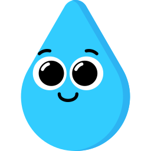

Causas de la Contaminación del Agua
La contaminación del agua se produce por el vertido de desechos industriales, agrícolas y urbanos, así como por el uso excesivo de productos químicos y el mal manejo de residuos.

Consecuencias de la Contaminación y Desperdicio del Agua
La contaminación y el desperdicio de agua afectan la salud humana, disminuyen la biodiversidad y agravan la escasez de agua potable. Esto impacta tanto a nivel local como global.
<
Soluciones para Proteger el Agua
Reducir el consumo de agua, mejorar el tratamiento de residuos y fomentar el uso de productos ecológicos son pasos clave para proteger nuestros recursos hídricos.